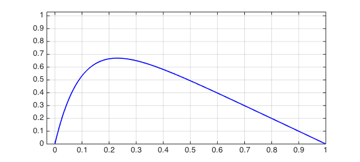
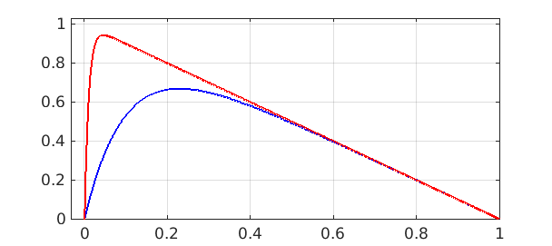
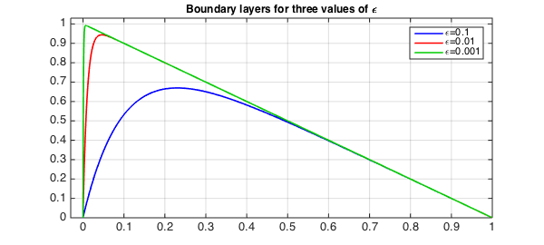
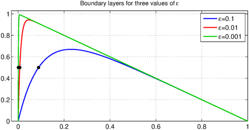
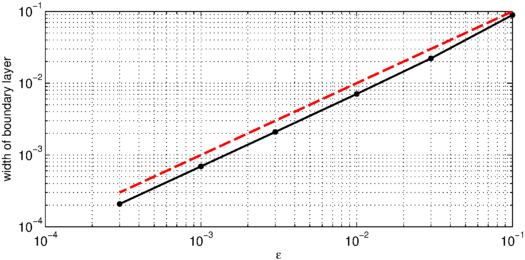

Consider the steady-state linear advection-diffusion equation
$$ L_\varepsilon u = -\varepsilon u'' - u' = 1,\qquad u(0) = u(1) = 0 , $$
where $\varepsilon>0$ is a small parameter. The solution to this equation has a boundary layer near $x=0$.
In Chebfun, we can define the $\varepsilon$-dependent operator like this:
dom = [0,1]; L = @(eps) chebop(@(u) -eps*diff(u,2) - diff(u),dom,'dirichlet');
Another supported and perhaps more memorable syntax for specifying boundary conditions is with the & operator:
L = @(eps) chebop(@(u) -eps*diff(u,2) - diff(u),dom) & 'dirichlet';
For $\varepsilon=0.1$ we get this picture:
u = L(0.1)\1; LW = 'linewidth'; lw = 1.6; clf, plot(u,'b',LW,lw) grid on, axis([-0.03 1 0 1.03])

Let's add a curve for $\varepsilon = 0.01$:
u = L(0.01)\1; hold on, plot(u,'r',LW,lw)

Here's $\varepsilon = 0.001$:
u = L(0.001)\1;
hold on, plot(u,LW,lw,'color',[0 .8 0])
legend('\epsilon=0.1','\epsilon=0.01','\epsilon=0.001')
FS = 'fontsize';
title('Boundary layers for three values of \epsilon',FS,12)

It can be shown that the width of the boundary layer for this equation is $O(\varepsilon)$. Suppose we want to measure this in Chebfun. One method would be to find the point where the solution goes through $0.5$. (This definition wouldn't work for larger $\varepsilon$.)
width = @(eps) min(roots(L(eps)\1-.5));
For example, here are the widths for the three curves just plotted:
format long w = [width(.1) width(.01) width(.001)]
w = 0.088880675019131 0.007073961393037 0.000694537220659
Let's add these points to the plot:
MS = 'markersize'; plot(w,[.5 .5 .5],'.k',MS,18)

We can also plot boundary layer width against $\varepsilon$. The dashed red line confirms the linear behavior.
epsvec = [.1 .03 .01 .003 .001 .0003];
for j = 1:length(epsvec)
w(j) = width(epsvec(j));
end
clf
loglog(epsvec,w,'.-k',LW,1.6,MS,16), grid on
xlabel('\epsilon',FS,12)
ylabel('width of boundary layer',FS,12)
hold on, plot(epsvec,epsvec,'--r',LW,2)
